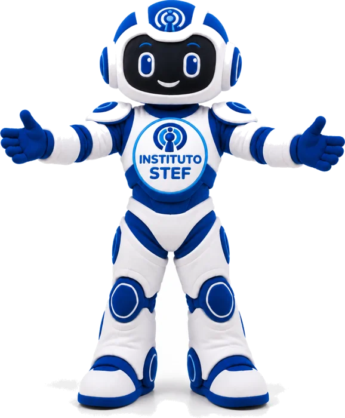

Quem somos
O Instituto STEF desenvolve soluções para fortalecer a gestão da saúde pública, integrando tecnologia, qualificação profissional, planejamento e apoio operacional.
Atuamos ao lado dos gestores públicos na construção de serviços mais eficientes, humanizados e sustentáveis, com foco na ampliação do acesso e na qualidade assistencial.
Saúde
Cuidado integral e humanizado, com foco na qualidade, na inovação e no impacto positivo nas comunidades. A jornada do cuidado conecta pessoas, equipes, processos e serviços.
STEF Saúde Comunitária: ação com atendimento ao idoso e vacinação.
A jornada do cuidado
Zera Fila
Mutirões e redução de filas. Atendimentos organizados por cidade para ampliar o acesso, enfrentar a demanda reprimida e acolher cada pessoa com respeito.
- Mutirões de consultas especializadas
- Mutirões de exames laboratoriais e de imagem
- Mutirões cirúrgicos eletivos
Ação recente: Cedro, Ceará, com a ação “Saúde que Avança”.
Campanha do mês

Outubro Rosa: juntas por mais vidas. Prevenção do câncer de mama.
Segurança
Tecnologia aplicada à prevenção, ao monitoramento e à melhoria da gestão pública, sempre para apoiar a atuação humana.
O que oferecemos
Videomonitoramento
Câmeras, CFTV e centrais de acompanhamento.
Identificação
Soluções integradas a protocolos de segurança e proteção de dados.
Controle de acesso
Entradas, permissões, catracas e fluxo de pessoas.
Alarmes e painéis
Multas, alarmes, CFTV e painéis de controle.

Cidade Digital Inteligente 360
Segurança, mobilidade, conectividade e gestão baseada em dados.
Estudo técnico do Instituto STEF (setembro de 2026) para uma plataforma municipal integrada. O objetivo não é só instalar câmeras: é capturar eventos, validar alertas, coordenar respostas e medir resultados.
Como funciona
- CampoCâmeras PTZ, fixas, leitores de placas (LPR) e sensores.
- TransporteFibra óptica, rede IP segregada e contingência por rádio.
- Centro de ComandoVideowall, gravação, mapas e operadores que validam e despacham ocorrências.
- InteligênciaLeitura de placas, fluxo de trânsito, regras de cena e alertas.
- GestãoIndicadores, auditoria, relatórios e integração entre órgãos.
Implantação por etapas


Privacidade em primeiro lugar
Toda câmera precisa responder: por que existe, quem pode ver, por quanto tempo a imagem fica guardada e quem consultou.
- Perfis de acesso e registro de todas as consultas
- Nada de câmeras em áreas com expectativa de privacidade
- Reconhecimento facial não é item padrão: só com base legal, avaliação independente e validação humana
- Segurança cibernética, backups e conformidade com a LGPD
A palavra do presidente
Henrique Pereira, presidente do Instituto STEF, conversa com Alana Sobreira sobre o Projeto Apoiar.
Duração: 8 min 51 s. Toque em um tema para ir direto ao trecho.
Temas da entrevista
Projeto Apoiar em 3 passos
- Capacitar e homologarAssociações, cooperativas e instituições públicas ou privadas recebem capacitação e apoio jurídico, contábil e documental.
- Projetos que fazem sentidoCada projeto é elaborado conforme a necessidade da localidade e de quem mora nela.
- Profissionais da regiãoPessoas capacitadas perto de casa: menos custo, menos deslocamento e uma economia local mais forte.
Fale com o Instituto STEF
Aberto ao diálogo com municípios, instituições, profissionais e comunidades.
Dionísio Torres, Fortaleza (CE)
CEP 60.135-215
